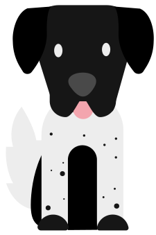

Tema 4 (Animation)
I Grundlæggende animation, blev vi introduceret for vector-grafik samt javaScript. Forløbets endelige produkt, skulle bestå af et spil, med vector-grafik, bygget op af html samt css, med javaScript til at lave animationerne. Illustrationerne blev herefter lavet i illustrator.
Før kodning af spillet kunne lade sig gøre, skulle der dog laves aktivitets- og state machine diagrammer. Disse diagrammer hjælper med overblikket, så og fungerer lidt som et layoutdiagram. En handlingsplan, for spillets forløb. Dog er det tiltænkt javaScript og ikke html, i modsætning til traditionelt layoutdiagram.
Koden til spillet er primært bygget på javaScript eventlisteners, som fjerner eller tilføjer klasser, alt afhængigt af brugerens interaktion.
Ændringer til mit færdige produkt, ville bestå i, at optage egne lyde som er mere relevante, fremfor dem som er integreret i spillet. Samt fixe problemer med faldende objekter, som er blokeret af andre spilelementer.